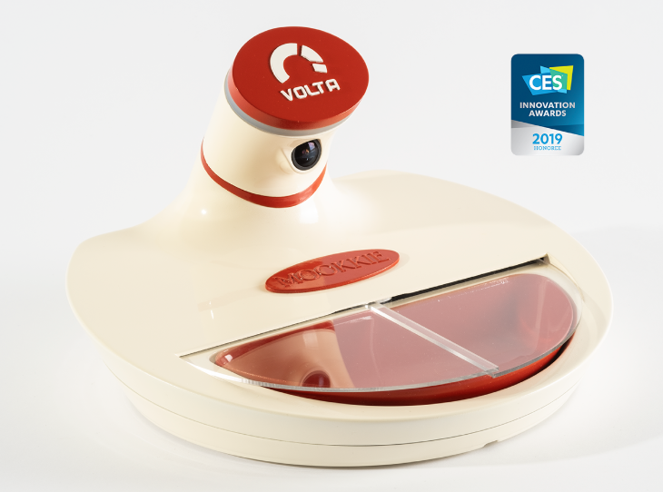

Mookkie: Face ID for cat food.

In the long march toward automating everything, we have finally arrived at an important milestone: a pet bowl that won’t feed the wrong animal. Mookkie is an AI-powered bowl with a little flap that stays shut until it visually recognizes the correct pet. That’s right — your cat now has Face ID. The bowl sees an approaching creature, runs a neural network check, and decides whether to grant access to kibble like it’s protecting state secrets.
The pitch is aimed at the classic domestic crisis: multi-pet households where one animal is basically a food burglar with whiskers. Mookkie pairs to a single pet and only opens for that one, preventing “food thieves” — which, according to the marketing copy, includes other pets, birds, wild animals, and even babies. The bowl can also send notifications and short video clips, meaning you can now receive smartphone alerts about your cat successfully eating lunch. This is either progress or proof we’ve all lost the plot.
There are magnets to self-center the bowl, an ergonomic shape for flat-faced cats, a transparent polycarbonate sliding panel, a warm night glow, freshness sealing, bug deterrence, and even an anti-ant system. In other words: it’s a luxury security door for dry food. It’s hard not to admire the commitment. We used to simply put food in a bowl. Now we authenticate the eater, monitor the surface, and receive video evidence that the mission was completed. In the end, Mookkie arrived a little too early, launching and quietly disappearing in 2020 before the world fully decided whether cat food really needed facial recognition. mookkie.com